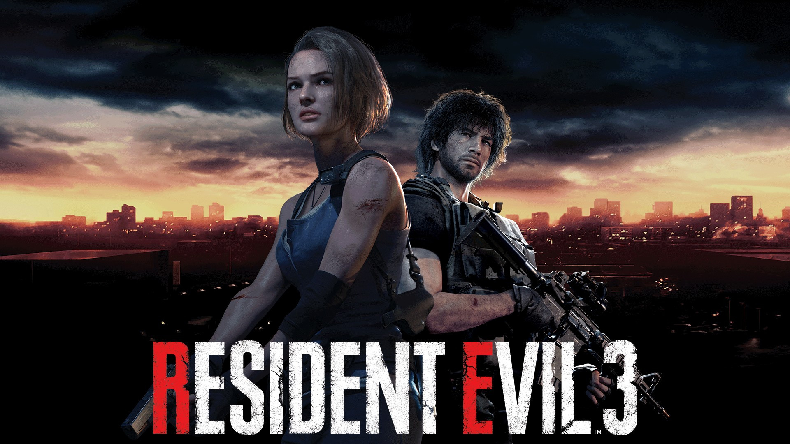

Resident Evil 3 Remake (2020) Protagonistas: Jill Valentine e Carlos Oliveira Ameaça Principal: Nemesis e o T-Virus Resumo: A história se passa dias antes e durante os eventos de Resident Evil 2. Jill, uma ex-membro da equipe de elite S.T.A.R.S., tenta fugir de Raccoon City enquanto o surto começa a engolir as ruas. A Umbrella envia a arma biológica implacável "Nemesis" para caçá-la e silenciá-la. Jill se junta relutantemente ao mercenário Carlos Oliveira. Após ser infectada e curada por Carlos, Jill tem uma batalha final contra uma versão totalmente mutada de Nemesis. Ela o derrota usando um canhão elétrico de alta potência (FINGeR) e escapa de helicóptero ao lado de Carlos momentos antes de o governo dos EUA destruir Raccoon City com um ataque de míssil.